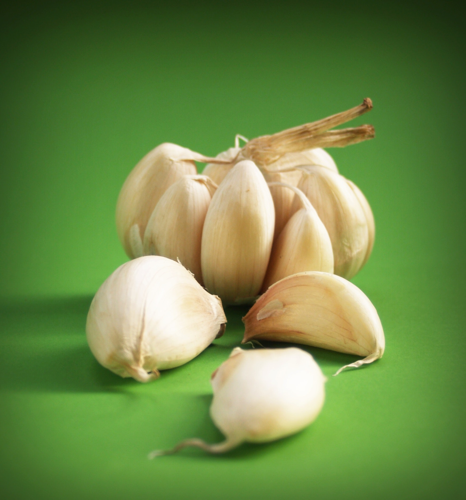

The spread of Italian food diversity began after the Roman Empire. Each region of Italy began to display its own unique way of cooking, the north developed Tuscan beef and the south developed provolone and mozzarella cheeses. The southern regions of Italy prefered hard-boiled spaghetti, while the north prefered soft egg noodles. Greek cookery became an influence in Italian cuisine and Italy imported a variety of foods from around the world. These imports included wheat, wine, exotic ingredients and spices. Coastal regions of Italy developed fish and seafood dishes using swordfish, lobster, anchovies, and sardines. Some of the island regions got influenced by North Africa, as well as some Arab influences. Today, each region still carries their own traditions in cooking and the differences in the cooking show the distinctions between the north and south.
Staple Ingredients
Ingredient
Use
Picture
Olive Oil
-Used in most dishes but is also served as a dip for bread-

Pasta
-Many different types of pasta used for main dishes-
Tomato
-Used in sauces, salads, soup, bruschettas, and pizzas-
Basil
-Used as a garnish or in pesto, which is served with salad, pasta, and meat-